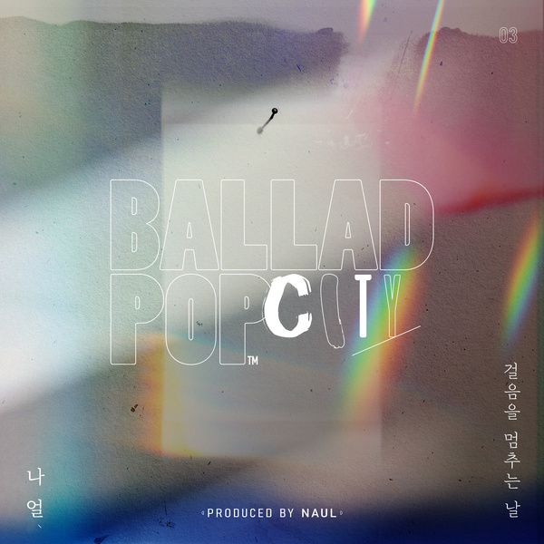

안녕하세요 한스입니다.
나얼의 목소리는 언제 들어도 애절합니다. 오늘은 나얼의 발라드 팝시티 프로젝트의 세번째 싱글인 걸음을 멈추는 날을 소개해드리겠습니다. 첫번째 싱글은 성시경의 아픈 나를, 두번째는 태연의 혼자서 걸어요가 먼저 발매되어 많은 사랑을 받았고, 세번째 싱글 걸음을 멈추는 날은 나얼 본인이 직접 불렀습니다.

나얼의 Ballad Pop City 프로젝트의 세 번째 싱글 - 걸음을 멈추는 날
뮤직비디오는 연인과 이별한 주인공이 연인과 헤어진 자리에서 헤어지던 날을 떠올리며 슬퍼하는 내용입니다.
나얼의 슬픈 발라드 가사와 잘 어울리는 뮤직비디오네요.
추억이 마음을 여미는 날에는
그대 생각을 멈출 수 없죠
저는 이 가사가 제일 좋았습니다.
Release Note
Composed by 나얼
Lyrics by 나얼
Arranged by 강화성
걸음을 멈추는 날의 가장 돋보이는 부분은 짧은 곡 안에서 표현해낸 완벽한 감정 변화다. 이별의 아픔을 담담하게 담아내고 있으며, 가사에 부합하는 서정적인 피아노와 스트링 선율이 곡을 채우고, 보컬 또한 체념한 듯 부드럽게 읊조린다.
이별로 아픈 그가 혼자서 걷다 추억에 발을 멈추고 모든 슬픔을 쏟아내는 세 곡의 연속성도 재밌는 대목이다. 첫 번째 주제가 ‘이별’이라고 했으니 다음 발라드 주제가 이어질 것으로 예상된다.
걸음을 멈추는 날 - 가사
바람이 마음을 스치는 날에는
그대 숨결을 느낄 수 있죠
난 잘 있어요 아무 걱정 말아요
이젠 제법 익숙한 걸요
추억이 마음을 여미는 날에는
그대 생각을 멈출 수 없죠
지나간 기억들을
떠올리는 일은
어떤 의미도 없는걸요
오 걸음을 멈추는 그런 날엔
우리의 자국들이 그 자리에
흩어지고 곧 사라져 또 그렇게
내 사랑은 어디에 있나요
초라한 나를 남겨 둔 채로
나는요
더 이상은 안돼요
정말로 나를 잊었나요
그댄 지금 어디에 있나요
내가 없는 날들이 살아지던가요
더는 힘들어요
제발 다시 돌아와 줘요
내게로
바래짐 위로
떠도는 기억
머문 그 자리엔
내 모자람 위로
가버린 날들
다시 안을 수 있도록 그대
내 사랑은 어디에 있나요
초라한 나를 남겨 둔 채로
나는요
더 이상은 안돼요
정말로 나를 잊었나요
그댄 지금 어디에 있나요
내가 없는 날들이 살아지던가요
더는 힘들어요
제발 다시 돌아와 줘요
내게로